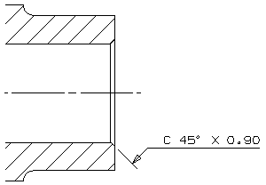

You need to dimension the small chamfer at the right side of the part. As you create the dimension, use the Annotation Style dialog box to set the following chamfer characteristics:
Shows the angle and size of the chamfer.
Shows the text above the stub.
Has a leader that is perpendicular to the chamfer.
Displays a C chamfer symbol in from of the dimensionb.
Uses two-place precision for the length of the chamfer.
In the detail view, create the following chamfer dimension on the bottom edge of the chamfer.
